0301
(B)
0302
(C)
0303
(B)
0304
(A)
0305
(A)
0306
(C)
0307
(D)
0308
(C)
0309
(B)
0310
(A)
0311
(B)
0312
(B)
0313
(C)
0314
(B)
0315
(C)
0316
(C)
0317
(B)
0318
(D)
0319
(B)
0320
(B)
0321
(C)
0322
(B)
0323
(B)
0324
(B)
0325
(B)
0326
(B)
0327
(D)
0328
(B)
0329
(B)
0330
(C)
0331
(A)
0332
(C)
0333
(D)
0334
(C)
0335
(C)
0336
(C)
0337
(D)
0338
(B)
0339
Kb1 =
2.3×10-10
(10-9.63)
Kb2 =
1.1×10-11
(10-10.96)
0340
1.8×10-4, 2.4×10-8 (10-3.75,
10-7.62)
0341
1.64
6.80 11.88
0342
8×1011, 4×105, (1011.9,
105.6)
3×1017, 4×1020 (1017.5,
1020.6)
0343
10-7.60,10-9.24,104.76,103.13
0344
PO43-,
H2PO4-,
[H+]+2[H3PO4]+[H2PO4-]
= [OH-]+[PO43-]
0345
pH > 4.2
pH = 2.7 pH = 4.2 pH = 2.7
0346
2.0, 3.5, 3.5,
5.0
0347
|
H3PO3
|
[H3PO3]=[H2PO3-]
|
H2PO3-
|
HPO32-
|
0348
0.56
0349
H2PO4-+
HPO42- ; 1:1
0350
=
>
0351
1.
B 2. C 3. A
0352
1.
C 2. A 3. B
0353
[H+]-0.30 =
[OH-]+[SO42-]
0354
[H+]+[H2CO3]
= [OH-]+[CO32-]
0355
[H+]+[HA] =
[NH3]+[OH-]
0356
[H+]+[HSO4-]
= [OH-]+[HCO3-]+2[CO32-]
0357
1. [H+]+[HAc]
= [NH3]+[OH-]
2. [H+] = [SO42-]+[OH-]+0.1
0358
[Na+] = 0.2mol/L
[CO32-]+[HCO3-]+[H2CO3]
= 0.1mol/L
0359
[H+]+[H2PO4-]+2[H3PO4]
= [NH3]+[PO43-]+[OH-]
[H+] = [SO42-]+[OH-]+0.1mol/L
0360
[NH4+]+[NH3]
= 2([H2CO3]+[HCO3-]+[CO32-])
= 2c
0361
1. [H+]+[HSO4-]
= [OH-]
2. [H+] =
[HCO3-]+2[CO32-]+[OH-]
0362
c=[NH4+]+[NH3]=
[H2C2O4]+[HC2O4-]+[C2O42-]
[NH4+]+[H+]
= [HC2O4-]+2[C2O42-]+[OH-]
2c=[NH3]+[NH4+]=
2([H3PO4]+[H2PO4-]+[HPO42-]+[PO43-])
0363
[NH4+]+[H+]=
[H2PO4-]+2[HPO42-]+3[PO43-]+[OH-]
0364
───────
────
1. [H+] = ÖKa(NH4+)Ka(HCN)
= Ö10-9.26-9.21
=10-9.24
──────────────
2. [H+] = ÖKa(NH4+)[NH4+]/(1+[A]/Ka(HA))
────────────
= Ö10-9.26-1.00/(1+101.00/10-1.30)
= 10-5.37
0365
由题意可知,指示剂的变色pH范围为
pH = pKa±1.3
[HIn] [H+]
即 ─── = ─── =
101.3 = 20
[In-] Ka
[HIn] 20
────── = ── = 0.95
[HIn]+[In-] 21
所以指示剂刚显酸色或碱色时,HIn或In-形式所占的百分比为95%。
0366
10.23, 1010.23,
103.77
0401
(C)
0402
(D)
0403
(D)
0404
(C)
0405
(C)
0406
(B)
0407
(A)
0408
(B)
0409
(A)
0410
(D)
0411
0412
(B)
0413
(D)
0414
(A)
0415
(C)
0416
(C)
0417
(C)
0418
(D)
0419
(C)
0420
(C)
0421
(B)
0422
1. B
2. A 3. B
4. C
0423
1. A
2. B 3. B
4. A
0424
1. B
2. D 3. A 4.
C
0425
[OH-] =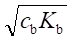
[H+] = 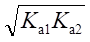
[H+] =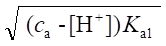
0426
2.48, 11.51
0427
2H++ B4O72-
+ 5H2O = 4H3BO3
[H+] = 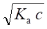
[H+] = 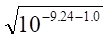
= 10-5.12
0428
3.98 , 8.46
0429
7.00 , 9.24
0430
4.42
, 10-8.58
0431
9.78 , 4.66
0432
缓冲物质总浓度,
酸与共轭碱浓度比
0433
0.575(c(HA)+c(A-))
0434
9.26
0435
4.66
0436
4.85
0437
16.4 g
0438
7.8
0439
1. ＞; 2. ＝
0440
4.1─6.1 , 5
0441
14g, 2.6mL
0442
(D)
0443
混合后溶液中:
总Y为 5+5×10-3×1000=10 (mmol)
总H+为 5×4-5×10-3×1000=15 (mmol)
b2
H+与Y4-反应生成5 mmol HY, 5 mmol H2Y,
(K2= ── = 106.16 )
b1
[H2Y]
1 1
[H+] = ──── = ─── =
──── = 10-6.16
[HY]K2 K2
106.16
pH = 6.16
[Y]:[HY] :[H2Y]
:[H3Y] :[H4Y]
= 1: [H+]β1:[H+]2β2:[H+]3β3:[H+]4β4
= 1:10-6.16+10.26:10-12.32+16.42:10-18.48+19.09:10-24.64+21.09
= 1:10+4.10:10+4.10:100.61:10-3.56
0444
c(HCl)>>c(H2PO4-),溶液[H+]由HCl决定
pH = 1.00
10-4.74
[Ac-]= cx0=10-5.7──────── =10-9.44
10-4.74+10-1.0
= 3.6×10-10
(mol/L)
[PO43-]=
cx0
10-21.68
=
10-3.0────────────────
10-3.0+10-4.12+10-10.32+10-21.68
= 10-21.71 = 1.9×10-22 (mol/L)
0445
将ClCH2COOH简写作HB,混合后形成HCl+HB溶液
0.10
0.12-0.10
c(HB)
= ── = 0.050
(mol/L), c(HCl) = ────── = 0.010 (mol/L)
2
2
PBE: [H+]
= [B]+c(HCl)
0.050×1.4×10-3
= ────────── + 0.01
[H+]+1.4×10-3
解得[H+] = 1.4×10-2
mol/L pH = 1.85
0446
总体积V = 445 mL
1.0×45
c(NH3)
= ────── = 0.10
(mol/L)
445
6.2×1000
─────── - 1.0×45
53.5
c(NH4+)
= ───────────── =
0.16 (mol/L)
445
c(NH3)
0.10
pH = pKa+ lg──── = 9.26 + lg──── = 9.06
c(NH4+)
0.16
c(NH3)・c(NH4+)
0.10×0.16
β= 2.3───────── = 2.3────── = 0.14(mol/L)
c(NH3)+c(NH4+)
0.10+0.16
0447
(1)解法①
设加入NaOH的浓度为cb(mol/L),则cb = 2.00/40.0 = 0.050 (mol/L)
16
c(CCl3COOH) = ──── = 0.10 (mol/L)
163.4
溶液的质子平衡式为: [H+] =
[CCl3COO-]-cb
0.23
[H+] = ─────×0.10-0.050
[H+]+0.23
解方程,[H+] = 0.036
mol/L pH = 1.44
解法②
因Cl3CCOOH加入NaOH后,构成缓冲溶液,ca = cb =
0.050 mol/L
ca-[H+]
可直接代入 [H+] = Ka
───── 计算,
cb+[H+]
0.050-[H+]
[H+] = 0.23×────────, 解得[H+]
= 0.037 mol/l, pH = 1.43
0.050+[H+]
(2) 设加入HCl的浓度为ca(mol/L), 根据质子平衡式
Ka
[H+] = ─────×c(CCl3COOH)+ca
[H+]+Ka
0.23
0.23 = ──────×0.10+ca
0.23+0.23
ca
= 0.18 mol/L
加入 n(HCl) = 0.18×1 = 0.18 (mol)
0448
在pH = 7.5时,为H2PO4--HPO42-缓冲液,其浓度分别是ca,cb,则有
ca
10-7.50 = 10-7.20───
(1)
cb
50ca+0.10×5.0
10-7.10 = 10-7.20───────── (2)
50cb-0.10×5.0
解得 ca = 0.015 mol/L
, cb = 0.030 mol/L
此溶液中c(PO43-) = 0.015+0.030 = 0.045 (mol/L)
c(Na+) = 0.015+2×0.030 = 0.075 (mol/L)
故V(H3PO4) = 0.045×1000/0.50 = 90 (mL)
V(NaOH)
= 0.075×1000/0.50 =
150 (mL)
0449
[Ac-]
根据 pH = pKa
+ lg────
[HAc]
[Ac-]
即 4.44 = 4.74
+ lg────
[HAc]
[HAc]
──── = 2.0
[Ac-]
加入NaAc使HCl定量变为HAc, [HAc] = 0.10 mol/L, 同时还有过量NaAc
[Ac-] = [HAc]/2 = 0.05 (mol/L)
m(NaAc)
= 0.15×100×82.0/1000 = 1.2 (g)
0450
设加入HCl溶液后的浓度为ca mol/L,以HA为质子参考水平,其质子平衡式
为:
[H+] + [H2A+] = [A-] + ca
所以 ca≈[H+]+[H2A+]
(1.0×10-2
)2×0.10
= 0.010 + ──────────────────────────
(1.0×10-2)2+4.5×10-3×1.0×10-2+4.5×10-3×2.5×10-10
= 7.9×10-2 (mol/L)
故应加入1.0 mol/L HCl的体积V(HCl) = 7.9×10-2×100/1.0 = 7.9 (mL)
需氨基乙酸的质量m(NH2CH3COOH) = 0.10×75.07/10 = 0.75 (g)
0451
解: pH = pKa
+ lg cb/ca
pH = 7.20 时 ca = cb
设需取H3PO4 x
(mL), 取HPO42-
y (mL)
x×1.0 + y×1.0 = 500×1.0
x×3 + y×1 = 500/2 ×2 + 500/2 ×1
解得 x= 125 mL, y = 375 mL
0452
溶液混合后浓度各减半,并发生HAc与NH3中和反应,平衡时
c(NH3)
= 0.10-0.01 = 0.09 (mol/L)
c(NH4+)
= 0.10+0.01 = 0.11 (mol/L)
c(Ac-)
= 0.01+0.01 = 0.02 (mol/L)
此时为NH3-NH4+缓冲体系, pH≈9,此时Ac-是主要型体,不影响 pH,故
c(NH4+) 0.11
[H+] = ─────Ka = ───10-9.25 = 10-9.16
c(NH3) 0.09
pH = 9.16
0453
加入NaOH的浓度= (200/40.0)×100 = 0.050 (mol/L)
设原配制的缓冲溶液中共轭碱的浓度[B-]=
x (mol/L)
[B-]
pH = pKa + lg────
[HB]
已知 pH = 5.60
, pKa = 5.30
x+ 0.050
5.60 = 5.30 + lg───────
0.25 -0.050
x =
[B-] = 0.35 (mol/L)
故原配制的缓冲溶液的pH为:
0.35
pH = 5.30 + lg────
0.25
= 5.45
0454
[Ac-]
pH = pKa+ lg────
[HAc]
5.20 =
4.74 + lg([Ac-]/[HAc])
[Ac-]
──── = 2.88
[HAc]
设1 L混合溶液中需加入0.20 mol/L NaOH溶液x mL,则消耗0.10
mol/L HAc
溶液为2x
mL,代入上式:
0.20x
──────── =
2.88 x = 270 (mL)
0.10(1000-3x)
故需加入0.20 mol/L NaOH溶液270 mL,
0.10 mol/L HAc溶液
1000-270 = 730 (mL)
0455
根据溶液中的平衡
H2en2+H+ + Hen+
[Hen+]
pH = pKa1+ lg─────
[H2en2+]
[Hen+]
6.65 = 6.85 + lg─────
[H2en2+]
[H2en2+]
[H2en2+]
lg───── =
0.30 ────── = 2.0
[Hen+]
[Hen+]
已知 c(H2en2+) = 0.15 mol/L
[H2en2+] = 0.10 mol/L [Hen+]
= 0.050 mol/L
故需加入m(NaOH) = 40.0×0.05 = 2.0 (g)
0456
NH3+CH2COO-+
H+→ NH3+CH2COOH
等体积混合后:
c(NH3+CH2COO-)
= 1.8-0.6/2 = 0.6 (mol/L)
c(NH3+CH2COOH)
= 0.6/2 = 0.3 (mol/L)
pH = pKa1+
lg(cb/ca) = 2.35 + lg(0.6/0.3) = 2.65
0457
设加入NaOH V (mL)
n(Ac-)
= 2V , n(HAc) = 0.3×100-2V = 30-2V
pH = 4.0 10-4.0
= 10-4.74(30-2V)/2V V = 2.3
mL
pH = 5.0 10-5.0
= 10-4.74(30-2V)/2V V = 9.7
mL
0458
bmax = 0.575×c总 = 0.10
c = 0.10/0.575 =
0.17 (mol/L)
[HAc] = [Ac-] = c总/2 = 0.085 (mol/L)
0.085×10×500
V(HAc)
= ────────── = 25
(mL)
17
0.085×10×500×136
m(NaAc・3H2O) = ───────────── = 58 (g)
1000
0459
HCl与HAc混合液的质子条件式是
[H+]
= c(HCl)+[Ac-]
1.用最简式 [H+] = c(HCl)
= 20×0.10/40 = 0.050
(mol/L)
pH=1.30
Kac(HAc) 10-4.74-1.30
此时[Ac-]
= ───── = ────────
[H+] 10-1.30
= 10-4.74(mol/L)<<0.05mol/L
忽略Ac-项合理
2.
0.20×0.10
c(HCl)
= ────── = 0.0010
(mol/L) c(HAc) = 0.10 mol/L
20.2
用近似式
10-4.74-1.00
[H+] = 0.0010+───────
[H+]
解得[H+] = 10-2.72mol/L
pH = 2.72
0460
混合后产物是 0.025mol/L SO42-
c(SO42-) = 0.025 = 10-1.60 ( mol/L)
质子条件: [H+]+[HSO4-]
= [OH-]
[H+] =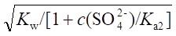
=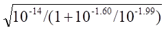
= 10-7.27
pH = 7.27
0461
T = 0% 时为0.050mol/L H2SO4
质子条件 [H+] = 0.050+[SO42-]+[OH-]
= 0.050+10-1.99×10-1.30/[H+]
解得[H+] = 10-1.23
, pH = 1.23
T = 100% 时为0.025mol/L Na2SO4
质子条件 [H+]+[HSO4-]
= [OH-]
[H+] =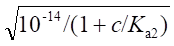
= 10-7.27
, pH = 7.27
0462
滴定终了放出n(H+) = 0.02×25×2 = 1
(mmol), 设在此滴定溶液中
n(HAc)=x ,
n(NaAc)=y, 则
x
10-5.50 = 10-4.74──
y
x+1
10-5.20 = 10-4.74───
y-1
解得 x = 1.4 mmol y = 7.8 mmol
故缓冲溶液中 c(HAc) = 1.4/5 = 0.28 (mol/L), c(Ac-) = 1.6 mol/L
故取冰HAc V(HAc)
= 0.28×1000/17 = 17
(mL)
NaAc・3H2O m(NaAc・3H2O) = 1.6×136 = 220 (g)
0463
Bi3+滴定终了时溶液中酸的物质的量n(H+) 为
n(H+)
= 0.10×25+0.020×25×2 = 3.5 (mmol)
pH = 5.50时 x(HA) = 10-5.50/(10-5.50+10-5.13) =
0.30
n(HA+A) = 3.5/0.30 = 11.7
m[(CH2)6N4]
= 11.7×140/1000 =
1.6 (g)
Zn2+滴定后,放出n(H+) = 0.02×25×2 = 1
(mmol)
11.7×0.30+1
4.5
[H+] = ────────10-5.13 = ───10-5.13 = 10-5.33
11.7×0.70-1
7.2
pH = 5.33
0464
�Ob×5
1.0×10-3×5
b= ───── = ─────── = 4.2×10-2
�OpH
0.12
[NH4+][NH3]
4.2×10-2=
2.3───────
(1)
[NH4+]+[NH3]
[NH4+]
10-9.49
──── = ───── =
0.59 (2)
[NH3] 10-9.26
由(1)(2)解得
[NH3] = 4.9×10-2mol/L
[NH4+] = 2.9×10-2mol/L
m(NH4Cl)
= c・V・53.49 = 2.9×10-3×0.2×53.49 = 0.31 (g)
V(NH3)
= 4.9×10-3×200/1.0 = 9.8 (mL)
0465
c1Kb1/c2Kb2
= 10-1-3.38/10-1-8.85 =105.5>105.0
可以
化学计量点溶液组成是CH3NH3+-
(CH2)6N4
[H+]= 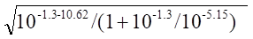
=10-7.89
pH = 7.89
0466
设原溶液中BCl为 x (mmol), BOH为 y (mmol)
[A]
据 pH = pKa+
lg───
[HA]
y
故有 10.0 = 9.7
+ lg ──
x
y-60
9.0 = 9.7 + lg ─────
x+60
解得 x = 40 mmol y = 80 mmol
40
即 [BCl] = ──── = 0.29 (mol/L)
140
80
[BOH] = ──── = 0.58
(mol/L)
140
0501
(B)
0502
(D)
0503
(C)
0504
(D)
0505
5.0, 4.0~6.0
0506
(C)
0507
(C)
0508
(C)
0509
(A)
0510
(B)
0511
(C)
0512
(A)
0513
(C)
0514
(B)
0515
1. A
2. B
3. C
4. D
0516
(D)
0517
(C)
0518
(1) 0.5 ([In]/[HIn] = K(HIn)/[H+]
= 10-3.4/10-3.1≈0.50)
(2) 10
(3) 由于人们的眼睛对红色比黄色灵敏
0519
|
点
|
V(HCl)/mL
|
体系的组成
|
[H+]的计算式
|
|
A
|
0.00
|
NH3
|
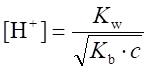
|
|
B
|
19.98
|
NH4++NH3
|
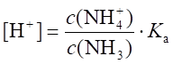
|
|
C
|
20.02
|
H++NH4+
|
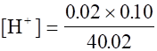
|
0520
|
点
|
V(NaOH)/mL
|
体系的组成
|
[H+]的计算式
|
|
A
|
19.98
|
NaCl+HCl
|
[H+]=(0.02/39.98)´0.1
|
|
B
|
20.00
|
NaCl
|
[H+]=[OH-]=10-7.0
|
|
C
|
20.02
|
NaCl+NaOH
|
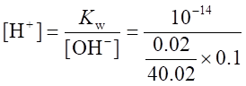
|
0521
|
点
|
V(NaOH)/mL
|
体系的组成
|
[H+]的计算式
|
|
A
|
0.00
|
HAc
|
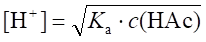
|
|
B
|
19.98
|
NaAc+HAc
|
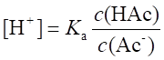
|
|
C
|
20.00
|
NaAc
|
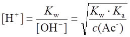
|
0522
|
点
|
V(HCl)/mL
|
体系的组成
|
[H+]的计算式
|
|
A
|
20.00
|
NaHCO3+NaCl
|
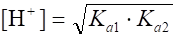
|
|
B
|
40.00
|
H2CO3+NaCl
|
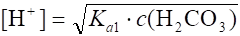
|
0523
强碱滴定一元弱酸;
酚酞 (百里酚蓝)
0524
V(甲基橙) 》V（酚酞）
V(甲基橙) ≈ V（酚酞）
0525
一, H2B, 甲基红
0526
一, DpKa<5,
[H+] =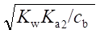
, 酚酞
0527
(1) 甲基红或酚酞;
(2) 甲基红(或甲基橙);
(3) 甲基橙; (4)
酚酞。
0528
(1) 甲基橙 (2) 酚酞
(3) 甲基橙或酚酞或甲基红
(4) 甲基橙
0529
0530
提示: 1.
NaOH滴HA 与 NaOH滴HCl 化学计量点后0.1% pH同。
2. HCl 滴 B 时 已知化学计量点后0.1%的pH为4.3。再据化学计量点前后对称性,因为DpH = 1,故化学计量点前0.1%的pH为5.3+1 = 6.3,因此就不用给常数。
0531
0532
0533
0534
-0.2%
0535
(1) 化学计量点时的滴定产物为NH2OH和NH4Cl
─────────
[H+] = ÖK(NH3+OH)×K(NH4+)
─────────
= Ö 1.1×10-5×5.6×10-10
= 2.5×10-8
(mol/L)
pH = 7.61
(2) 化学计量点时
5.6×10-10
x(NH3) = ──────────── = 2.2%
2.5×10-8
+ 5.6×10-10
不能
0536
化学计量点溶液由含0.05 mol/L NaA与0.005 mol/L NH4Cl所组成, 质子条件式为:
[H+]+[HA]
= [NH3]+[OH]
─────────────
[H+] = Ö K(NH4+)[NH4+]/[1+[A]/K(HA)]
──────────
= Ö 10-9.26-2.3/(1+10-1.3/10-1.30)
= 10-5.93
pH =
5.93
化学计量点后0.1%,过量NaOH与NH4Cl反应,此时
c(NH3)
= c(NaOH) = 10-4.30 (mol/L)
c(NH4+)
= 10-2.30-10-4.30 = 10-2.30 (mol/L)
c(NH4+) 10-2.30
[H+] = ───Ka = ─────10-9.26 = 10-7.26(mol/L)
c(NH3) 10-4.30
pH = 7.26
0537
化学计量点组成为HA-
─── ───────
[H+] = Ö Ka1Ka2
= Ö 4.0×2.5×10-13
= 1.0×10-6(mol/L)
pH = 6.00
0538
滴定反应 Ba(OH)2+2HCOOH =
Ba(HCOO)2+2H2O
设HCOOH溶液的体积为V (mL),根据反应的计量关系滴定至计量点时,
Ba(OH)2 溶液消耗的体积为V/4 (mL), HCOO-的浓度为:
0.100×V
[HCOO-]计= ───── = 0.0800 (mol/L)
V+V/4
已知Ka(HCOOH ) = 2.0×10-4, Kb(HCOO-)
= 5.0×10-11
──────────
[OH-]计= Ö 5.0×10-11×0.0800
= 2.0×10-6
(mol/L)
pOH计=
5.70 pH计= 8.30
0539
1. 化学计量点前0.1%
pH = pKa2+lgc[(B2-)/c(HB-)]
= 5.41+lg(99.9/0.1) = 8.41
2. 化学计量点时
──
────
[OH-] = Ö cKb1 =
Ö cKw/Ka2
────────
= Ö0.05×10-14.00/10-5.41
=10-4.94 (mol/L)
pH = 14-4.94 = 9.05
3. 化学计量点后0.1%
0.10×0.1%
[OH-] = c(NaOH) = ────── = 10-4.30 (mol/L)
2
pH =
14-4.30 = 9.70
0540
解法1
(1) 化学计量点前0.1% n(H2C2O4)
= 0.05×20×0.1% = 1.0×10-3 (mol)
n(C2O42-) = 0.05×20×99.9% = 0.999( mol)
H2C2O4+C2O42- =
2HC2O4-
实际是 n(HC2O4-)
= 2.0×10-3
mol
n(C2O42-) = 0.998 mol
2.0×10-3
[H+] = ──────×10-4.29 = 10-6.99(mol/L)
0.998
pH = 6.99
──
────
(2) 化学计量点时 [OH-]
= Ö Kb1c = Ö 10-9.71-1.61 = 10-5.66 (mol/L) pH
= 8.34
0.10×0.02
(3) 化学计量点后0.1% [OH-]
= ────── = 10-4.30(mol/L)
pH = 9.70
40.02
解法2 按终点误差公式计算
化学计量点 同上 pH = 8.34
Ktc
=109.71-1.60 = 108.11 若Et =±0.1%
10DpH - 10-DpH
Et = ─────── 求得�OpH = 1.35
2(Kt・c)1/2
即 pH 8.34 ±1.35 即 6.99 ~ 9.69
0541
化学计量点时溶液的组成为Ac-、H3BO3
───────────────
[H+]计 = Ö (0.20/0.10)×5.8×10-10×1.8×10-5
= 1.44×10-7
(mol/L)
pH = 6.84
�OpH = 6.20-6.84 = -0.64
10-0.64-100.64
Et = ─────────────────────×100% = -3.3%
──────────────────
Ö(0.100×1.8×10-5)/(0.200×5.8×10-10)
0542
────────
(1) [H+]计= Ö 5.8×10-10×0.100 = 7.6×10-6 (mol/L)
pH计=
5.12
(2) 终点时pH=5.12+0.5=5.62,滴定终点在化学计量点之后,设加入过量
NaOH的浓度为c(NaOH) mol/L
c(NaOH)
= [H2BO3-]+[OH-]-[H+]
5.8×10-10
[H2BO3-] = 0.100×───────────── = 2.4×10-5 (mol/L)
2.4×10-6+5.8×10-10
[H2BO3-]-[H+]
2.4×10-2.4×10-6
Et = ──────────×100% = ──────────×100%
c(HCl)计
0.0500
≈0.04 %
0543
(1) 化学计量点时溶液为0.05 mol/L NaAc
────
[OH-]= Ö 10-9.26-1.30 =
5.28(mol/L) pH = 8.72
化学计量点前0.1%为NaOH-NaAc,忽略后者
0.1×0.1%
[OH-]= ────── =10-4.30(mol/L) pH = 9.70
2
化学计量点后0.1%为HAc-Ac-缓冲溶液
c(HAc) 10-4.30
[H+] = ────Ka = ─────×10-4.74 = 10-7.74(mol/L)
c(Ac-) 10-1.30
pH = 7.74
[HAc] 0.05×10-7
(2) Et = ──── = ───────────×100% = 0.6%
c(HCl) (10-7+10-4.74)×0.05
0544
(1) 化学计量点为0.05mol/L NH4Cl
── ────
[H+] = Ö Kac = Ö10-9.26-1.30 = 10-5.28(mol/L)
pH为5.28
(2) NH3的百分数即x(NH3),在pH = 7.0时:
Ka
10-9.26
x(NH3)= ──── = ──────── = 0.0055,即NH4+有0.55%变为NH3
Ka+[H+]
10-9.26+10-7.0
过量碱
mmol
[NH3]
(3) Et = ────────×100%= ─────×100%
应加碱
mmol c(HCl)计
0.05×0.55
= ───────×100% =
+0.28%≈0.3%
0.10
0545
[H+] 10-8
x(NH4+)
= ──── = ─────── = 0.95
Ka+[H+] 10-9.25+10-8
Ka 10-3.75
x(MoO42-)
= ──── = ─────── ≈1.0
Ka+[H+] 10-3.75+10-8
Ka1Ka2[H+]
x(HPO42-)
= ─────────────────── ≈0.86
[H+]3+Ka1[H+]2+Ka1Ka2[H+]+Ka1Ka2Ka3
Ka1[H+]2
x(H2PO4-)
= ─────────────────── ≈0.14
[H+]3+Ka1[H+]2+Ka2Ka2[H+]+Ka1Ka2Ka3
根据滴定反应可知,1 mol的磷消耗24 molNaOH,产生1 mol HPO42-,2
mol的
NH4+,但终点时有5%NH4+以NH3形式存在,14%的HPO42-变为H2PO4-,故这一滴
定的终点误差为
(0.05×2-0.14)/24×100%≈-0.2 %
0546
(1) HA=H++
A-
│R
R2A, [R]=10-0.7 (mol/L)
aA(R) = 1+10-0.7+2.5+10-1.4+4.8
= 103.4
K'a(HA) = KaaA(R) = 10-9.2+3.4 = 10-5.8
(2) K'b(A)
=10-8.2
───
[OH-] = Ö 10-8.2-2 = 10-5.1(mol/L) pH计= 8.9
(3) K't
= Ka'/Kw = 108.2
100.5-10-0.5
Et = ─────────×100% = 0.25%
(10+8.2-2)1/2
0547
增加2, 增加1, 不变
0548
─── ────
[OH]计= Ö Kbc计 = Ö10-10.26-1.3
= 10-5.78 (mol/L) pH
= 8.22
甲基红变黄时pH = 6.2
Et
= -x(HA)×100%
10-6.2
= - ────────×100% =
-0.4%
10-6.2+10-3.74
10-2-102
或 Et = ────────×100% = -0.3%
(1010.26-1.3)1/2
0549
──
───
[OH]计= Ö Kbc = Ö 10-7-1.3 = 10-4.15(mol/L)
pH = 9.85
酚酞变粉红 pH=9.0
Et = ([OH-]-[HA])/c计×100%
= [10-5/10-1.3-10-9/(10-9+10-7)]×100%
=
-1.0%
10-0.85-10+0.85
或 Et = ────────×100% = -1.0%
(107-1.3)1/2
0550
化学计量点为0.033 mol/L SO42-溶液
────
[OH] = Ö 10-12.01-1.48 =
10-6.75(mol/L) pH = 7.25
甲基橙变黄 pH = 4.4
Et = -([H+]+[HSO4-])/c计×100%
10-4.4
10-4.4
= [- ──── - ───────── ]×100%
10-1.48 10-4.4+10-1.99
=
(-0.12-0.39)% = -0.5%
0551
化学计量点为CH3NH3+,
其 pKa =
14.00-3.38 = 10.62
────
[H+] = Ö 10-10.62-1.30
= 10-5.96 (mol/L) pH = 5.96
甲基橙变橙 pH = 4.0
Et = [([H+]-[CH3NH2])/c计]×100%
=
[-(10-4.0 /10-1.3 )-10-10.62 /(10-4.0
+10-10.62 )]×100%
= 0.2%
10-2-102
或 Et = ─────────×100% = 0.2%
(1010.62-1.3)1/2
0552
1 mol Ba(OH)2 2 mol OH-
前0.1%: [OH-] = c(OH)剩余= (0.020×2×0.02)/(20+39.96)
= 10-4.88(mol/L)
pH = 9.12
后0.1%: [H+] = c(HCl)过量 = (0.020×2×0.02)/(20+40.04)
= 10-4.88(mol/L)
pH = 4.88
甲基橙变橙 pH = 4.0
Et = ([H+]终-[OH-]终)/c计×100%
= [(10-4-10-10)/(0.020×2×20/60)]×100%
= 0.8%
0553
不对
(1) 利用x求浓度时,Ka仅两位有效数字,pH仅一位,计算得到四位有效数字不合理。
(2) 更重要的是终点远离突跃范围,确定终点pH出入将导致计算结果很大差别。以指示剂确定终点有±0.3 pH 出入, 若终点早0.3pH(即pH4.1)则 x(HAc)约82%,由此计算c(HAc)=0.16 mol/L,差别太大,因此乙的方法是错误的。
0601
(A)
0602
(B)
0603
(A)
0604
(D)
0605
(C)
0606
(B)
0607
(C)
0608
(D)
0609
(B)
0610
(D)
0611
(B)
0612
(B)
0613
(A)
0614
(B)
0615
(A)
0616
(D)
0617
(C)
0618
(B)
0619
1. 能 2.能 3.不能 4. 能
0620
HCOOH
, Na2CO3
0621
|
|
H3BO3
|
硼砂
|
HCl+H3BO3
|
|
必要试剂
|
甘油(或甘露醇)
|
|
|
|
标准溶液
|
NaOH
|
HCl
|
NaOH
|
|
指示剂
|
酚酞
|
甲基红(橙)
|
甲基红(橙)
|
0622
|
CH3NH2(甲胺)
|
能
|
甲基橙或甲基红
|
|
NaAc
|
不能
|
|
|
H3BO3(硼酸)
|
不能
|
|
|
Na2B4O7・10H2O(硼砂)
|
能
|
甲基橙或甲基红
|
|
C6H5NH3+Cl(盐酸苯胺)
|
能
|
酚酞
|
0623
|
KHS
|
能,H2S
|
HCl
|
甲基橙(或甲基红)
|
|
酒石酸氢钾
|
能,A2-
|
NaOH
|
酚酞
|
|
氨基乙酸偶极离子
|
不能
|
|
|
0624
能
HCl 甲基红(或甲基橙)
能
NaOH 甲基红(或甲基橙)
否
0625
不能,返滴定与直接滴定的化学计量点一致, 返滴不能改变反应完全度, 突跃大小不变。
0626
加浓碱(NaOH)蒸馏,使NH4+变为NH3蒸出。
甲基橙(或甲基红), 负, HCl标准溶液。
后者只需一种标准溶液(HCl),吸收剂H3BO3只需保证过量,不需知其浓度与体积。而前者需两种标准溶液(NaOH与HCl)。
0627
甲基红 , 酚酞 ,橙红→黄→粉红, 1:1
0628
(1) 不可以;
(2) 因为HAc溶液吸收NH3后,生成NH4Ac,Ac-是很弱的碱,不能用HCl标准溶液准确滴定Ac-。
0629
3.3
0630
50％
0631
NaOH溶液中含有Na2CO3
0632
偏高, 无影响
0633
NaOH+Na2CO3;
Na2CO3+NaHCO3
0634
V1>
V2: NaOH+Na2CO3
V1<
V2: Na2CO3+NaHCO3
V1=
V2: Na2CO3
V1
= 0 : NaHCO3
V2
= 0 : NaOH
0635
HCl-H3PO4
0.05336-0.01952
H2PO4-
0.06708
0636
H3PO4-H2PO4-
0.05248-0.03580
H3PO4
0.05332
0637
1. Na3PO4
2. Na3PO4+Na2HPO4
3. Na2HPO4或Na2HPO4+NaH2PO4
4. NaH2PO4
0638
(1) 10.00
mL (2) 40.00 mL
0639
(1)
2/3 (2) 3/4
0640
1. NaOH , 2. Na2CO3+NaHCO3
,
3. NaOH+Na2CO3， 4. Na2CO3
, 5. NaHCO3
0641
8.4 4.3 12.4
0642
设混合物中有x mol NaOH,有y mol Na2CO3,依题意立方程:
40.00x+106.0y = 0.4650 (a)
x+2y = 0.2000×0.0500 (b)
解联立方程,得
x = 0.005000 mol,
y = 0.002500 mol
m(NaOH)
= 40.00×0.005000 =
0.2000 (g)
m(Na2CO3)
= 106.0×0.00250 =
0.2650 (g)
0643
0.1000×24.25×500×80.04
w(NH4NO3) = ─────────────────
×100% = 97.1%
25×4.000×1000
97.1
换算成干试样时, w'(NH4NO3)
= ────── = 99.2%
(1-2.20％)
0644
n(P4O10):n(PO4):n(NaOH)
= 1:4:4×24
[40.00×0.2160-0.1284×20.00]´283.9/(4×24)
w(P4O10) = ───────────────────────×100%
0.0240×1000
= 74.82%
0645
0.4852×1000×2
c(HCl) = ─────────── = 0.1044 (mol/L)
381.4×24.37
0.1044×23.74×40.00
w(NaOH) = ────────────×100% = 38.94%
2.546×1/10
(1/2)×0.1044´(24.86-23.74)×106.0
w(Na2CO3) = ──────────────────×100% = 2.43%
2.546×1/10×1000
0646
Fe3++H2Y2-
= FeY-+2H+
EDTA与Fe3+络合放出的H+的物质的量是Fe3+的2倍
(0.1015×32.50)-(0.02012×20.04×2)
c(HCl) = ────────────────────
25.00
= 0.0997 (mol/L)
0647
化学计量点pH = pHCOO- =
(1/2)pKs = 3.1
化学计量点前0.1％时,质子条件 [H+] =
[HCOO-] + c酸
Ks
10-6.2
[H+]= ─── + c酸= ─────
+ 10-4.3(mol/L)
[H+] [H+]
解得[H+] = 10-3.09
mol/L pH = 3.09
10-6.2
化学计量点后0.1％时,
[H+] = [HCOO-]- c碱= ─────-10-4.3 (mol/L)
[H+]
解得[H+] = 10-3.11mol/L
pH = 3.11
即突跃为pH3.09→3.11,仅0.02单位(若按最简式计算突跃为pH4.3→1.9,显然是错误的,其原因是HCOOH的Ks大,不能按最简式计算)。
0648
从两个终点所需HCl溶液体积可以判定该试液为PO43-和HPO4-混合液
c(HCl)×10.00 = c(PO43-)V0
c(HCl)(50.00-2×10.00) = c(HPO4-)V0
c(PO43-)/c(HPO4-)
= 1/3
pH = pKa3+
lg(1/3) = 12.36 - lg(1/3) = 11.9
0649
2 1
n(NaOH):n(NaHCO3) = ─── : ─── = 0.05:0.012
40 84
V(HCl)酚酞:V(HCl)甲基橙= 0.05 : 0.062 = 0.81
:1
0650
1. HA的摩尔质量
1.250×100
M(HA) = ──────── = 336.9 (g/mol)
0.100×37.10
[A-]
2. pH = pKa + lg────
[HA]
4.30 = pKa + lg[7.42/(37.10-7.42)]
pKa= 4.90 , Ka=1.3×10-5
0.100×37.1
3. 化学计量点时, c(A-)
= ─────── = 0.043
(mol/L)
50.0+37.1
────────────
[OH-] = Ö1.0×10-14/1.3×10-5×0.043 = 5.8×10-6(mol/L)
pOH =
5.24 pH = 8.76
0651
设HB的摩尔质量为M,根据化学计量关系,可得
0.500
─────×1000 = 0.100×40.94
M(HB)
0.500×1000
M(HB) = ─────── = 122.1 (g/mol)
0.100×40.94
由上表可知,化学计量点时消耗NaOH溶液为40.94
mL,中和一半时的V(NaOH) = 20.47 mL,此时[HB]=[B-] pKa=
4.21
0652
HA的总量n总(HA) = 0.1100×24.60 = 2.706 (mmol)
当滴入NaOH溶液11.00
mL时,已知pH = 4.80,即溶液中A-的物质的量n(A-) = 0.11×11.00 = 1.210(mmol), 则HA的物质的量n(HA) = 0.1100×24.60-0.1100×11.00 = 1.496(mmol)
1.210
4.80 = pKa+ lg─────
1.496
pKa=
4.80 + 0.09 = 4.89
0653
0654
无影响
偏低
0655
偏低
无影响
0656
突跃小,终点误差大; 造成浪费
0657
设Na2M为 x (mol), NaHM为 y (mol)
┌
x - 0.01000×1.00
y + 0.01000×1.00
│ ────────── = ───────────
┤
21.00
21.00
│
└
x = 0.01×10.00
x = 0.1 mol y
= 0.08 mol
0.1×2+0.08
总共需V(HCl) = ────── = 28 (mL)
0.01000
0658
准确称取试样m (g),用水溶样后,以HCl标准溶液滴定Na2B4O7,选甲基红指示剂, 耗HCl V1,然后用丙三醇强化,加酚酞指示剂继续滴定,又耗去 V2
M(Na2B4O7)
c(HCl)V1────────
2
w(Na2B4O7)
= ──────────────── ×100 %
m样
[c(HCl)V2- c(HCl)V1]M(H3BO3)
w(H3BO3) = ─────────────────×100 %
m样
0659
准确移取试液体积(V0),以甲基红指示剂,NaOH标准溶液滴定, 终点耗去体积V1,然后加入不含甲酸的甲醛,继以酚酞为指示剂,用NaOH滴定,终点耗去体积 V2。
c(NaOH)V1
c(H2SO4) = ──────
2V0
c(NaOH)V2
c[(NH4)2SO4] = ───────
2V0
0660
H2SO4
NaOH标液
SO42- NaOH标液
────→
───────→
H3PO4 甲基橙 H2PO4-
百里酚酞
HPO42-
V1(mL)
V2(mL)
c(NaOH)V2
c(H3PO4) = ──────
V试液
c(NaOH)(V1- V2)
c(H2SO4) = ──────────
2V试液
0661
HCl NaOH标准溶液,V1(mL)
Cl- NaOH标准溶液,V2(mL)
──────────→
───────────→ H2BO3-
H3BO3
甲基橙红变黄
H3BO3 甘油,酚酞由红→黄→粉红
测HCl
测H3BO3
0662
Na2CO3 + Na3PO4
│ 甲基橙为指示剂
│
│ 用标准HCl滴定,消耗V1(mL)
↓
H2CO3 + NaH2PO4
│ 煮沸除尽CO2
│
│ 百里酚酞为指示剂
│
│ 用标准NaOH滴定,消耗V2(mL)
↓
Na2HPO4
c(NaOH)V2M(Na3PO4)
w(Na3PO4) = ──────────── ×100%
m样
(c(HCl)V1- 2c(NaOH)V2)M(Na2CO3)
w(Na2CO3) = ───────────────────── ×100%
m样
0663
不合理。酸滴碱时[H+](即[SH2+])应逐渐增大,而计算结果正好相反, 错在化学计量点后0.1%计算。按质子条件
Ks
10-6.2
[SH2+] = [S-]+c酸= ────+10-4.3 = ───── + 10-4.3
[SH2+]
[SH2+]
解出[SH2+]=10-3.08,此处[S-]>c酸,忽略[S-]是错误的。
突跃即化学计量点前后0.1%的pSH2+,因化学计量点前后基本对称,突跃为 2×0.02 = 0.04 pSH2+,
突跃太小(<0.3), 故无法准确滴定。
0664
试液经适当稀释后,吸取一份试液放入锥形瓶中,加入酚酞指示剂,用NaOH标准溶液滴定至粉红色不褪,记下消耗NaOH溶液的体积V (mL)。用移液管再取一份试液放入另一锥形瓶中,加入V/2 (mL) NaOH标准溶液。先用广泛pH试纸确定大pH,然后用精密pH试纸确定。
2301
(C)
2302
(B)
2303
(A)
2304
(D)
2305
(C)
2306
(C)
2307
(A)
2308
(C)
2309
B,D,F;
A,C,E,H ; G
2310
4.60 , 8.40
, 6.50 , 6.50
2311
(C)
2312
[H2CO3]=[CO32-]
2313
[H3PO4]=[HPO42-]
2314
[Na+] = 2c和[H2CO3]+[HCO3-]+[CO32-]
= c
2315
[H+] = [OH-]
2316
[H+]+[Na+]
= [OH-]+[Cl-]
2317
H2PO4-
+ H2PO4- = H3PO4 + HPO42-
2318
(B)
2319
(C)
2320
(D)
2321
(B)
2322
(C)
2323
(C)
2324
a=b=c
2325
D B
A C
2326
────
(A) [H+]=√Ka(c-[H+])
──
(B) [H+]=√Kac
────
(C) [H+]=√Ka(c-[H+])
────
(D) [H+]=√Kac+Kw
2327
──
(A) [H+]=√Ka1c
───
(B) [H+]=√Ka1Ka2
───
(C) [H+]=√Ka1Ka2
──
(D) [H+]=√Ka1c
2328
───
(A) [H+]=√Ka1Ka2
───────
(B) [H+]=√Ka1Ka2c/(Ka1+c)
────
(C) [H+]=√K(HAc)c
────
(D) [H+]=√Ka(I)Ka(II)
2329
(B)
2330
(C) , (A)
2331
(D)
2332
(C)
l2333
(A)
2334
(A)
2335
(C)
2336
pH经准确实验测得的缓冲溶液 作为测定pH时的标准参照溶液
2337
0.01~1mol/L
2338
缓冲溶液 pH
2339
5
2340
缓冲容量 共轭酸碱对浓度比为1 pH
= pKa 0.575c
2341
NaAc-HAc或(CH2)6N4-HCl
2342
NH4Cl-NH3・H2O
2343
4.15~6.15
2344
增大, 增大, 减小, 不变
2345
4.74
2346
NH4Cl-NH3
2347
3.18
2348
7.20
2349
(B)
2350
混合后生成[H2PO4-]=
0.40/2 = 0.20 (mol/L)
生成[HPO42-]=
0.10/2 = 0.050 (mol/L)
[HPO42-]
pH = pKa2+lg───── = 7.20-0.60 = 6.60
[H2PO4-]
2351
pKa =
5.07
x
5.00 = 5.07+lg────
50.0-x
x = 23.0 (mL)
2352
等体积混合后
生成[HPO42-]
= 0.20mol/L,剩余[H2PO4-]
= 0.050mol/L
[HPO42-]
pH
= pKa2+lg────── = 7.20+0.60 = 7.80
[H2PO4-]
2353
原HAc-Ac-溶液中
10-4.74
[Ac-]= ─────────×0.50 = 0.323 (mol/L)
10-5.00+10-4.74
[HAc] = 0.50-0.323 =
0.177 (mol/L)
0.323×300+(0.040×300)
pH = 4.74+lg───────────── = 5.16
0.177×300-(0.040×300)
2354
等体积混合后
生成[HCO3-]
= 0.20/2 = 0.10,剩余[CO32-]
= (0.30-0.20)/2 = 0.050
[CO32-]
pH = pKa2+lg───── =10.25-0.30 = 9.95
[HCO3-]
2355
根据电解氧化反应。1.0 mmol RNHOH产生4.0 mmol H+
故[H+] = 4.0/100 =
0.040mol/L
H+与Na3PO4反应生成的[HPO42-]
= 0.020mol/L
H+与Na2HPO4反应生成的[H2PO4-]
= 0.020mol/L
最后缓冲溶液中的组分的浓度为
[HPO42-]
= 0.080mol/L [H2PO4-] =
0.020mol/L
即pH = 7.20+lg(0.080/0.020) =
7.80
2356
此酸的Ka1 = 1.2×10-2,Ka2 = 6.02×10-7
第一化学计量点时,c(HA-)
= 0.0500mol/L
[H+] = 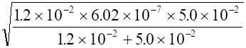
= 7.6×10-5 (mol/L)
pH =
4.12 选甲基橙
第二化学计量点时,c(A2-)
= 0.0333mol/L,
[OH-]=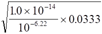
= 2.4×10-5(mol/L)
pOH = 4.63, pH = 9.37, 选酚酞
2357
设原缓冲溶液中[A-] = x
(mol/L), 则
(100x+5.0)
4.60 = 4.30+lg────────
(100×0.25)-5.0
解得 x = [A-] = 0.38mol/L
原缓冲溶液的pH为
pH = 4.30+lg(0.38/0.25)
= 4.48
2358
已知B的pKb = 4.30,BH+的pKa = 9.70
[B] [BH+] 1
9.40 = 9.70+lg───
─── = ─
[BH+]
[B] 2
设原缓冲溶液中[B] = x mol/L
[BH+] = 2x mol/L
加入30.0mmol NaOH后
(200x+30.0)
10.0 = 9.70+lg────────
(200×2x-30.0)
解得 x = 0.15
[B] = 0.15 mol/L
[BH+] = 2×0.15 = 0.30 (mol/L)
2359
1. 9.49 = 9.26+lg([NH3]/[NH4Cl])
[NH3]/[NH4+]
= 1.7
2. 设缓冲溶液中NH4+物质的量为x mmol,加入1.0mmol固体NaOH后改变0.15pH单位, 即pH为9.64
(1.7x+1.0)
9.64 = 9.26+lg───────
(x-1.0)
解得 x = 4.86 mmol
[NH4+]
= 4.86/200 = 0.024 (mol/L)
[NH3] = 4.86×1.7/200 = 0.0408 = 0.041
(mol/L)
2360
(D)
2361
(B)
2362
不妥!因测定pH有±0.02单位误差,只能取二位有效数字,由此求得体积也只二位, 即40mL。最后求得w(HA)应为51%,此非准确的定量分析。也就是说要求四位有效数字的定量分析不能由仅有二位有效数字的平衡常数求得。
2363
pK(HIn)
, pK(HIn)±1
2364
pKa-0.70
< pH < pKa+0.48 或：
下限 pKa+lg(1/5)
= pKa-0.70
上限 pKa+lg3
= pKa+0.48
2365
2.2 , 0.18
红色时 2.9 = 3.25+lg[In-]/[HIn],[In-]/[HIn]
= 102.9-3.25 = 0.45
[HIn]/[In-] =
2.2
黄色时 4.0 = 3.25+lg[In-]/[HIn],[In-]/[HIn]
= 104.0-3.25 = 5.6
[HIn]/[In-] =
0.18
2366
5.4
2367
[H+]
, ≥10
, ≤0.1
, 10 > [In-]/[HIn] > 0.1
2368
酸碱指示剂是一种能够通过自身颜色的变化指示溶液pH的试剂。一般是弱的有机酸或有机碱,它们的酸式与其共轭碱式具有不同的颜色,当溶液的pH改变时,引起酸式和碱式互相转化,从而引起颜色的变化。
2369
相同之处都是利用颜色之间的互补作用使变色更加敏锐。 不同之处是前一种变色范围变窄,后一种并不改变变色范围。
2370 (B)
2371 (D)
2372
(B)
pKa2 =
7.15×2-4.80 = 9.50
Ka2 =
3.2×10-10
2373 弱, 高, 大
2374 强, 低, 小
2375 增大2pH; 减小2pH
2376 增大1 pH; 减小1 pH
2377
了解滴定过程中pH的变化;
估计被测物质能否被准确滴定;
选择合适的指示剂。
2378
不改变 增加0.5 增加1
2379
[OH-]终-[HA]终
Et
= ────────×100%
或：
c计
10DpH -10-DpH
Et
= ────────×100%
(cKt)1/2
2380 弱酸的Ka和浓度ca,
caKa≥10-8
2381 弱碱的Kb和浓度cb,
cbKb≥10-8
2382 B
B A C
2383 (D)
2384 (A)
2385 (C)
2386 邻苯二甲酸氢钾, 草酸
2387 Na2CO3
, Na2B4O7・10H2O
2388 1:2
2389
┏━━━┓
┃甲基红┃
┗━━━┛
┏━━━━┓
│ ┏━━━━┓
↓
┃浓NaOH ┃
↓ ┃标准HCl ┃
┗━━━━┛
┗━━━━┛
┏━━┓
┏━━┓
┏━━━━━━┓
┃
┃──→ ┃NH3 ┃───────→┃NH4+、H3BO3 ┃
┗━━┛
┗━━┛吸收在H3BO3中 ┗━━━━━━┛
┏━┓
┏━┓
┃黄┃色至┃红┃
┗━┛
┗━┛
(cV)HClM(NH4+)
w(NH4+)
= ─────────×100%
m试样
2390
混合后发生酸碱反应,
生成[H2PO4-]
= 0.200mol/L
[HPO42-] = 0.0500mol/L
(1)以甲基红为指示剂时
V(HCl) = 0.0500×100/0.100 = 50.0 (mL)
(2)若改用百里酚酞为指示剂
V(NaOH) = 0.200×100/0.400 = 50.0 (mL)
2391
所移取的50.0mL试液中,NaHCO3和NaOH物质的量:
1.008×1000
n(NaHCO3)
= ──────
= 2.400 (mmol)
84.00×5
0.3200×1000
n(NaOH)
= ───────
= 1.600 (mmol)
40.0×5
生成的n(Na2CO3) = 1.600 (mmol)
剩余的n(NaHCO3) = 2.400-1.600 = 0.800 (mmol)
设以酚酞为指示剂时,消耗HCl为V1(mL)
0.100×V1 = 1.600 V1
= 16.0 mL
设继续以甲基橙为指示剂时,消耗HCl为V2 (mL)
0.100×V2 = (1.600+0.800) V2
= 24.0 mL
2392
4NH4++6HCHO
= (CH2)6N4H++3H++6H2O
NaOH,酚酞,n(NaOH):n(NH4+)
= 1:1
2393
1. 应选甲基橙。因若选酚酞则沉淀(MgNH4PO4)又出现,无法测定;
2. 1:2
2394
|
V1 V2
|
组成
|
|
V1 = V2
|
NaOH
|
|
V1 = 0
|
NaHCO3
|
|
2V1=V2
|
Na2CO3
|
|
2V1>V2
|
NaOH+Na2CO3
|
|
2V1<V2
|
NaHCO3+Na2CO3
|
2395
|
V1 V2
|
组成
|
|
V1 = 0
|
NaOH
|
|
0 = V2
|
NaHCO3
|
|
V1 = V2
|
Na2CO3
|
|
V1 > V2
|
NaOH+Na2CO3
|
|
V1 < V2
|
NaHCO3+Na2CO3
|
2396
(1)先配成饱和的NaOH溶液(约55%),然后用煮沸除去CO2的冷蒸馏水稀释至所需浓度。或(2)在较浓的NaOH溶液中加入BaCl2或Ba(OH)2,然后吸取上层清液稀释掷所需浓度。
2397
2C2H5OH
= C2H5OH2++C2H5O-
C2H5O-
4301
创立了酸碱的质子理论
创立了电解质稀溶液理论，提出了计算活度系数的Debye-Hückel公式
提出了电极电位与氧化还原电对浓度关系的Nernst方程式
创立了酸碱的电子理论
4302
g－－离子的活度系数
z－－离子的电荷
a－－离子体积参数，约等于水合离子半径
I－－离子强度
B－－常数，（水溶液25℃时为0.33〕
4303 0.024
mol/L
4304 (
D )
4305 (
1 ) 0.012 mol/L ( 2 )
0.008mol/L
4306 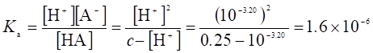
4307
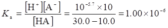
4308
设苯甲酸为HA，则

4309 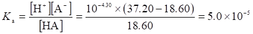
4310
加入17.5 mL碱以后，溶液中
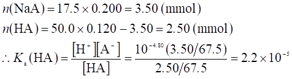
4311

4312
加入17.5mL NaOH后，产生的NaA的物质的量
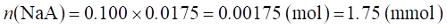
剩余的HA的物质的量
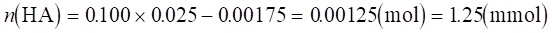
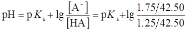
于是，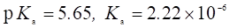
4313
Kb(HCOO-)=(2.19×10-6)2/0.100 =
4.80×10-11
Ka(HCOOH)=Kw/Kb=1.00×10-14/(4.80×10-11) = 2.09×10-4
4314
c/Ka=0.070/(1.12×10-5)>500，故按最简式计算

4315 2.2×109
4316
依题意，
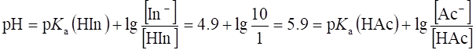
设加入1.00mol/L NaOH溶液的体积V(NaOH)为x L，则
［Ac-］=1.00x/( 0.200 + x
)
［HAc］=(0.200
×0.100 �C 1.00x)/(
0.200 + x ) ，代入上式
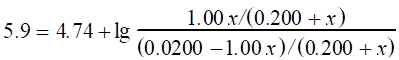
x = V(NaOH) = 0.0187 L = 18.7 mL
4317
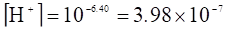
，因此
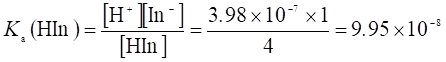
4318
依题意，
pH=pKa(HIn)+lg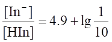
=3.9=pKa(HAc)+lg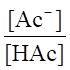
设加入1.00mol/L NaOH溶液的体积V(NaOH)为x L，则
［Ac-］=1.00x/( 0.200 + x
)
［HAc］= (
0.200 ×0.100 �C 1.00x
)/( 0.200 + x ) ，代入上式
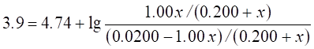
x = V(NaOH) = 0.0025 L = 2.5 mL
4319 (1)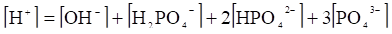
(2)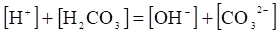
4320 (1)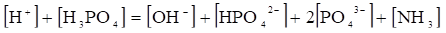
(2)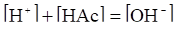
4321 (1)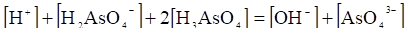
(2)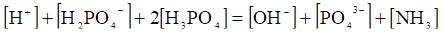
4322 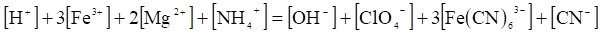
4323 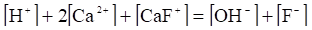
4324 (1)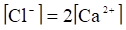
(2)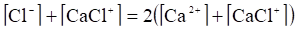
或 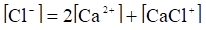
4325 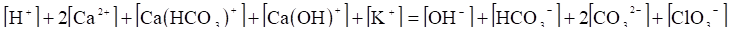
4326 (1)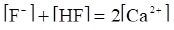
(2)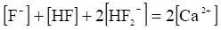
4327
4328 [H+]+2[Ca2+]+[Ca(HCO3)+]+[Ca(OH)+]+[K+]=[OH-]+[HCO3-]+2[CO32-]+[ClO4-]
[H+]+2[Ca2+]+[Ca(HCO3)+]+[Ca(OH)+]+[K+]=[OH-]+[HCO3-]+2[CO32-]+[ClO4-]
4329 2.26
4330
4331
0.0100 mol/L H2SO4溶液可视为0.0100 mol/L H+和0.0100 mol/L HSO4-的混合溶液，因此
解法1： 物料平衡
(1)
电荷平衡 (2)
解联立方程(1)和(2)，得
解法2：
4332
解联立方程 (1) 和
(2)
4333
n(KH2PO4)=0.204/136.09
= 0.00150 (mol)
与KH2PO4反应的NaOH
n(NaOH)=0.100
×0.00500 = 0.000500
(mol)
产生0.000500
mol HPO42-。因此，溶液中含
n(HPO42-)= 0.00050 mol
n(H2PO4-)= 0.00150 - 0.00050 =
0.00100 (mol)
4334
H3BO3 + NaOH = NaH2BO3 + H2O
因此，所得溶液为NaH2BO3，其浓度为0.20×0.025/(0.025 + 0.020) =
0.11(mol/L)
 pOH = 2.88 pH = 11.12
pOH = 2.88 pH = 11.12
4335
混合后将发生下列中和反应：
H3PO4 + Na2HPO4 = 2NaH2PO4
因此混合后

缓冲容量
4336
混合后的溶液，［OH-］剩余＝(0.100 - 0.010)/2
= 0.045(mol/L)，pOH
= 1.35，pH = 12.65
4337 D
4338
c/Ka1= 0.010/(1.2×10-3) < 500
pH
= 2.54
4339
4340
c/Ka
= 0.200/(5.6×10-10)>500，故按最简式计算
4341
4342
[H+]0=10-pH
[H+]=10-(pH+1.60) [H+]/[H+]0=10-1.60=0.025
说明[H+]降低至开始值的2.5% 。
4343 B
4344
4345
4346
4347
NH3溶液中
HAc溶液中
4348 混合后溶液中
4349
反应前：
n(NaAc)=
4.92/82.03 = 0.0600 mol
n(H+)= 0.200×0.200 = 0.0400 mol
反应后:
n(HAc)=n(H+)=0.0400 mol
n(Ac-)=0.0600-0.0400=0.0200 mol
4350
反应前：
n(NaOH) = 0.250 ´ 0.200 = 0.0500 (mol)
n(NH4Cl) =
10.70/53.49 = 0.2000 (mol)
反应后：
n(NH3) = 0.0500
mol
n(NH4+) = 0.2000 �C 0.0500 =
0.1500 mol
4351
4352 8.21
4353 D
4354 B
4355
由pH和磷酸的pKa可见，该缓冲溶液的主要物种应是H2PO4-和HPO42-。设取x mol H3PO4，它与x mol NaOH反应,生成x mol NaH2PO4，又设另需加入y mol NaOH，需10.0 x L 0.100 mol/L H3PO4 和10.0(x + y)L
0.100 mol/L NaOH。因此
解联立方程，得y = 0.0142 mol, x = 0.0429 mol。即需要429 mL 0.100 mol/L H3PO4和571mL 0.100 mol/L NaOH。
4356
开始时，
加入NH4Cl后，
4357
最初，
( 1 ) 稀释后，
( 2 )
(3)
因此，加入NaOH使溶液的pH增加最大。
4358 50%
4359
开始时，
加入NaAc后，
4360
由此可得，。设需要加入0.100 mol/L NaOH的体积为x L，则
解方程得，x = 0.222 L = 222 mL，而缓冲溶液总的体积为0.222 + 0.500 = 0.722
(L)，其离子强度I ≈c(NaAc)=［Ac-］= 0.222 ´ 0.1000/0.722 = 0.0308(mol/L)。为使离子强度达到0.250 mol/L，应加入NaCl的浓度为0.250
- 0.0308 = 0.2192(mol/L)，加入NaCl的质量m(NaCl)= 0.2192 ´ 58.44 ´ 0.722 = 9.25(g)
4361
4362
4363
4364
对于溶液1 (1)
(2)
解联立方程式，得
对溶液2 (3)
(4)
解联立方程式，得
因此， ［HAc］最终＝(0.0847 + 0.0357)/2 = 0.0602 (mol/L)
［Ac-］最终＝(0.0153 + 0.0643)/2 = 0.0398 (mol/L)
pH最终 = 4.74 +
lg(0.0398/0.0602)= 4.56
4365
依题意，
ca+cb=1.00mol/L
解得：[SO42-]=0.309mol/L , [HSO4-]=0.691
m(Na2SO4)=0.309×142.04×0.500=21.9(g)
m(NaHSO4)=0.691×120.06×0.500=41.5(g)
4366
( 1 )
( 2 )
( 3 )
可见，缓冲溶液的缓冲容量随缓冲对浓度的增加而增加。
4367
最初，在溶液中
n(NaHCO3)= 1.10/84.01
= 0.0131( mol )
n(Na2CO3)= 3.18/105.9
= 0.0300( mol )
加入1.00 mL 1.00 mol/L HCl溶液后，与CO32-反应 ( CO32- + H+ = HCO3- ) ，
4368
设需三(羟甲基)氨基甲烷的质量 m[(HOCH2)3CNH2]= x g
4369
4370
最初，溶液中酒石酸的物质的量
n(H2A)= 0.100 ´ 0.250 =
0.0250(mol)
缓冲溶液应含NaHA物质的量
n(NaHA)= 0.0250 ´ 0.562 = 0.01405(mol)
应含Na2A物质的量 n(Na2A)= 0.0250 ´ 0.387 =
0.00968(mol)
为此，应加入NaOH物质的量
n(NaOH)= 0.01405 + 2 ´ 0.00968 = 0.0334(mol)
所以，应加入NaOH的质量
m(NaOH)= 0.0334 ´ 40.00 = 1.34(g)
4371
4372
依题意，［H+］= 10-4.43 =3.72 ´ 10-5，
c(H2C2O4)=
0.9004/(90.04 ´ 0.100)= 0.100(mol/L)，则
最初，溶液中 n(H2C2O4)=
0.9004/90.04 = 0.0100(mol)
因此，缓冲溶液中
n(NaHC2O4)= 0.0100 ´ 0.428 =
0.00428(mol)
n(Na2C2O4)= 0.0100 ´ 0.572 =
0.00572(mol)
制备缓冲溶液需加
n(NaOH)= 0.00428 + 2 ´ 0.00572 =
0.0157(mol)
V(NaOH)= 0.0157/1.00 = 0.0157(L) = 15.7mL
4373
已知 ，当c > 10-3 mol/L时，上式可简化为
4374 A
4375
混合后，溶液组成为0.0400 mol/L Na2HPO4和0.0200 mol/L NaH2PO4。因此
4376
Kb1 = Kw/Ka2 = 1.0 ´ 10-14/5.6 ´ 10-8 = 1.8 ´ 10-7，c/Kb1 = 0.225
/ 1.8 ´ 10-7 > 500，故按多元碱最简式计算
4377
令所得溶液的体积为V，首先，假定所有的电解质都全部解离，这样即可计算出溶液中每种离子的物质的量。然后假定H+按强度从大到小的次序依次与碱反应。则得
n(H+)= 0.600 +
(0.0500 ´ 3) + (0.0800 ´ 2) = 0.910(mol)
n(OH-)= 0.110 mol
n(PO43-)= 0.0500 + 0.0800 +
0.350 = 0.480(mol)
首先，0.110 mol H+与0.110mol OH-反应，剩余0.910 - 0.110 = 0.800 mol H+。然后，0.480 mol H+与0.480 mol PO43-反应，生成0.480 mol HPO42-，剩余0.800 - 0.480 = 0.320 mol H+，继续与0.320 mol HPO42-反应，生成0.320 mol H2PO4-，剩余0.480 - 0.320 = 0.160 mol HPO42-。所以，溶液含0.320mol NaH2PO4，0.160 mol Na2HPO4和0.110 mol NaCl。这是一个缓冲溶液，其pH为
4378
c/Ka = 0.200/1.12 ´ 10-5 > 500，故按最简式计算
4379 B
4380
pH = pK(HIn)或指示剂酸式和碱式浓度相等时的pH；按照一定的化学计量关系在被测物溶液中逐滴加入标准滴定溶液至指示剂变色(终点)，从而根据标准滴定溶液的浓度和消耗的体积对被测物进行测定的分析的方法；终点与化学计量点不一致所引起的误差；在化学分析中用作比较标准的化学物质。
4381 2.00
mmol N2H4消耗8.00 mmol NaHCO3
4382 HCl溶液中
n(H+)= 0.0500 ´ 0.050 = 0.00250(mol)
Ba(OH)2溶液中
n(OH-)= 0.0250 ´ 0.050 ´ 2 = 0.00250(mol)
因此，两溶液混合后，溶液的pH =
7.00
4383 混合前 n(NaOH)=
0.100 ´ 0.200 = 0.200(mol)
n(HAc)= 0.150 ´ 0.400 = 0.600(mol)
混合后，由于中和作用产生0.200 mol Ac-，因此，剩余的HAc为0.400 mol。
4384 1.0%；0.3%
4385 是
4386 否
4387 大。在标定中，所用HCl的体积将比不存在杂质时小(对于相同试样)，因此c计算>c真实。
4388 大。在标定中，所用HCl的体积将比无杂质的情况小，V真实 < V计算 (对于相同的试剂量)，因此，c计算 > c真实。
4389
4390
设0.3800 g试样含x mol Na2CO3，则含NaHCO3 3x mol，因此
x
´
105.99 + 3x ´ 84.01 = 0.3800(g)
x =
1.061 ´ 10-3 mol
则
V酚酞=(1.061 ´ 10-3)/0.1000 = 0.01061(L)
V甲基橙=(2 ´ 1.061 ´ 10-3 + 3 ´ 1.061 ´ 10-3)/0.1000 = 0.05307 (L)
4391
n(Na2CO3)=
0.2650/105.99 = 2.500×10-3(mol)
n(NaHCO3)=
0.1260/84.01 =1.500 ´ 10-3(mol)
( 1 ) V1(HCl)= 2.500 ´ 10-3/0.2000 =
0.01250(L)=12.50(mL) (酚酞)
( 2 ) V2(HCl)=(1.500 ´ 10-3 + 2 ´ 2.500 ´ 10-3)/0.2000 =
0.03250(L)=32.50(mL) (甲基橙)
4392
设0.2400 g试样含x mol Na2CO3，则含NaOH 2x mol，因此
x
mol ´ 105.99 + 2x ´ 40.00 = 0.2400 (g)
x
= 1.290 ´ 10-3 mol
则
V酚酞=[(1 ´ 1.290×10-3)
+ (2 ´ 1.290×10-3)]/0.1000
= 0.03870(L)
V甲基橙=( 2 ´ 1.290 ´ 10-3 + 2 ´ 1.290 ´ 10-3)/0.1000 =
0.05160(L)
4393 w(C6H5CHO)=0.01512 ´ 0.5020 ´ 106.12/0.8242 =
0.977
4394 w(C5H5N5O)=[(0.02500
- 0.01532) ´ 0.1000 ´ 151.13]/0.1650 = 88.7%
4395 M(二元有机酸)=(0.32208´ 2)/(0.04267 ´ 0.1008)=
150.1(g/mol)
4396 橙红至黄，黄至橙
4397 是
4398
设1L该溶液含NaOH x mol，含Na2CO3 y mol
，则
x
+ 2y = 0.1000
x
+ y = 0.0990
解联立方程得
x = 0.09800 mol，y = 0.001000 mol，因此
m(NaOH)=
40.01 ´ 0.09800 = 3.92(g)
m(Na2CO3)= 105.99 ´ 0.001000 =
0.1060(g)
4401 CO2吸收速率
=[(0.02331 -
0.01217) ´ 0.1250 ´ 44.01 ´ 1000]/[25.0 ´ (0.02500/0.1000) ´ 48] =0.204(mg/h・g)
4402 m(C6H5OH)=(0.01837
- 0.00812) ´ 0.5040 ´ 94.11 = 0.4862(g)
4403
设此一元酸为HA，其摩尔质量为M( HA )，依题意
4404
4405
因V甲基橙 > 2V酚酞 ( 35.68 mL > 2 ´ 14.34 mL )，因此试样由Na2CO3和NaHCO3组成。
4406
4407
4408
设需加入NH4Cl的物质的量为x mol，则
4409
( 1 ) c/Ka
= 0.10/0.6 < 500，故
( 2 )
即
4410
设需要HA体积V(HA)= x L，则NaOH的体积V(NaOH)=(0.100 - x)L
［H+］=
1.0 ´ 10-5
n(A-)=(0.00500 - 0.0500x)mol
n(HA)= 0.100x -(0.00500 - 0.0500x)=(0.150x - 0.00500)mol
x = 0.0375 L =37.5 mL，因此，应取37.5 mL HA和62.5 mL NaOH混合。
4411
在缓冲溶液X中，
而在缓冲溶液Y中，
X和Y等体积混合，则有［HA］= 0.500 mol/L，［A-］=(0.500 + 5.00)/2 = 2.75
(mol/L)，
因此所得溶液的pH为
4412
设0.2400 g试样含x g Na2CO3，则含NaHCO3(0.2000 - x)g，因此
x =
0.00636 g w(Na2CO3)= 0.00636/0.2000
= 0.0318
w(NaHCO3)= 1 - 0.0318
= 0.968
4413
设HCl的体积为x L，所需HCl的物质的量 n(HCl) = 2.00x mol
x = 0.032 L 即需32 mL 2.00 mol/L HCl。
4414
解联立方程式，得 ［Ac-］= 1.82 mol/L，因此，在1L溶液中NaAc物质的量
n(NaAc)=
1.82 ´ 1.000 = 1.82 (mol)
为此，在1 L溶液中应加入NaOH物质的量
n(NaOH)=
1.82 - 1.000 = 0.82 (mol)
所以，在0.500 L溶液中应加入NaOH的质量
m(NaOH)=
0.82´ 40.00 = 16.4(g)
4415
4416
最初，pH = 4.74 + lg(0.100/0.100)=
4.74 [H+]=1.82×10-5 (mol/L)
当加入NaOH后，［HAc］= 0.100 - 0.010 = 0.090(mol/L)
[Ac-]= 0.100 + 0.010 = 0.110(mol/L)
pH
= 4.74 + lg(0.110/0.090 )= 4.83 [
H+ ]= 1.47 ´ 10-5 (mol/L)
因此，[H+]从1.82 ´ 10-5 mol/L降至1.47 ´ 10-5mol/L，而pH升高ΔpH =4.83 - 4.74 = 0.09
4417
设溶液中[HAc] = x mol/L，依题意
1.8 ´ 10-5 = 9.0 ´ 10-6 [Ac-]/x
[Ac-] = 2x
当加入HCl后，[HAc]
= x + 0.010 - 1.00 ´ 10-5 = x + 0.010
[Ac-] = 2x - 0.010 + 1.00 ´ 10-5 = 2x
- 0.010
∴ [H+]= 1.00 ´ 10-5 = 1.8 ´ 10-5 ´ (x + 0.010)/(2x
- 0.010)
x =[HAc]= 0.140
mol/L [Ac-] = 0.280 mol/L
4418
最初，在溶液中
令[ X-]0≈[NaX]0 = x mol/L 因此，[HX]0 = 2x mol/L
加入的HCl的浓度
c(HCl)= 0.010/0.100 = 0.100(mol/L)
加入HCl后
[X-]=x - 0.100 [HX] = 2x +
0.100 pH = 4.80
4.80 = 5.30 +
lg[(x - 0.100)/(2x + 0.100)] x = 0.358
mol/L
因此，最初 [NaX]0 = 0.358 mol/L [HX]0 = 0.716 mol/L
4419
【解1】设缓冲溶液的体积为V mL，pH = 7.00时，缓冲溶液由NaH2PO4和Na2HPO4组成。当加入NaOH时，发生下列反应
H3PO4 + NaOH = NaH2PO4 + H2O
(1)
NaH2PO4 + NaOH = Na2HPO4 + H2O
(2)
对于式 (1)，需加入NaOH
0.0400 ´ 0.100 = 0.00400(mol)
对于式 (2)，需加入NaOH
x mol，则总共需加入NaOH
( 0.00400 + x ) mol，产生x mol Na2HPO4，剩余 (0.00400 - x) mol NaH2PO4。因此

因此总共需要加入NaOH 0.00400 + 0.00153 = 0.0553(mol)，其体积为
V(NaOH)= 0.0553/0.500 = 0.01106(L) = 11.06 mL
【解2】设磷酸盐的分析浓度为c，则
该溶液主要由NaH2PO4和Na2HPO4组成 ( H3PO4和PO43-可忽略不计)。
最初溶液含H3PO4
n(H3PO4)= 0.0400 × 0.100 = 0.00400(mol)
缓冲溶液中：
n(H2PO4-)= 0.00400 ×
0.62 = 0.00248(mol)
n(HPO42-)= 0.00400 ×
0.38 = 0.00152(mol)
为此需加入NaOH
n(NaOH)= 0.00248 + 2 × 0.00152 = 0.00552(mol)
V(NaOH)= 0.00552 ÷ 0.500 = 0.01104(L) = 11.04 mL
4420
pH
= pKa(HIn) ± 1；在化学计量点前后0.1%时，溶液的pH呈现的突然变化；处于化学平衡时，某物种所占总浓度的分数；已知准确浓度的滴定剂溶液。
4421 B
4422 大；小
4423

4424
( 1 ) Na2B4O7 + 5H2O == 2Na+ + 2H2BO3- + 2H3BO3
x
2x 2x
I = 1/2(2x ´ 12 + 2x ´ 12)= 2x = 0.020
x = 0.010 mol/L
m(Na2B4O7・10H2O)= 0.010 ´ 500/1000 ´ 381.37 =
1.9(g)
(2)
(此缓冲溶液缓冲容量有极大值，总浓度为4 ´ 0.010 mol/L )
4425
代入有关数据，整理得
解得 [H+]=
0.0098(mol/L)
pH = 2.01
4426
( 1 ) 1.4，6.5；
( 2 ) 55，160
4427
4428